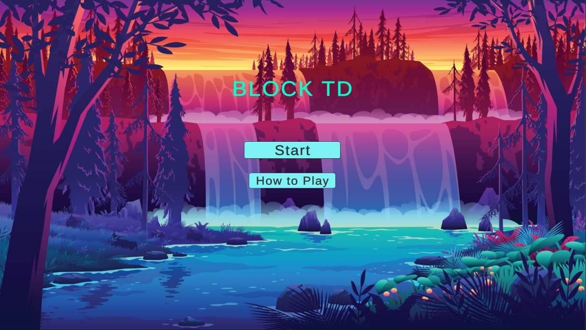

Verkkosivusto · 2025
Haikuron.fi
Rakensin kennelille responsiivisen verkkosivuston, jolla kävijä voi tutustua kenneliin, sen koiriin ja palveluihin.
Next.js · Tailwind CSS
Rakensin kennelille responsiivisen verkkosivuston, jolla kävijä voi tutustua kenneliin, sen koiriin ja palveluihin.
Next.js · Tailwind CSS
Rakensimme verkkosovelluksen palkan laskemiseen. Sovelluksessa on kirjautuminen, käyttäjäroolit ja käyttäjähallinta. Blazor-käyttöliittymä käyttää .NET-rajapintaa, ja käyttäjätiedot tallennetaan MongoDB:hen.
C# · Blazor · .NET 8 · MongoDB
Raspberry Pi 5 laskee kamerakuvasta, montako ihmistä tilassa on. Next.js-näkymässä voi seurata henkilömäärää ja säätää rajaa, jonka mukaan Pi Zeron merkkivalot vaihtuvat. Testasin kolmen LEDin kytkennän ja korjasin sen johdotusvirheen.
Raspberry Pi · Hailo · MQTT · Node.js · Next.js
Rakensin Pico WH:lla ohjaimen, jossa kiertonupilla selataan OLED-näytön valikkoa. Testasin samassa kytkennässä nupin painalluksen, neljä painiketta sekä RGB-ledin väri- ja kirkkaussäädön.
Pico WH · MicroPython · I²C · OLED
Pystytin Pi 5:lle Docker-palvelimen ja otin käyttöön Tailscale-etäyhteyden. Pi-hole suodattaa DNS-kyselyitä. Uptime Kuma ja Beszel seuraavat palveluiden saatavuutta ja koneen resurssien käyttöä.
Linux · Docker · Tailscale · Pi-hole

Ensimmäinen kokonainen peliprojektini. Toteutin tornipuolustuspelin pelilogiikan ja käyttöliittymän sekä julkaisin pelattavan version Unity Playssa.
Unity · C#